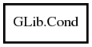

GLib.Cond Reference Manual
Packages
glib-2.0
GLib
Cond
Cond
broadcast
signal
timed_wait
wait
wait_until
Cond
Object Hierarchy:

Description:
[
Deprecated
( since =
"glib-2.32"
, replacement =
"Cond (with --target-glib=2.32)"
) ]
public
class
Cond
Warning:
Cond is deprecated. Use "Cond (with --target-glib=2.32)".
Namespace:
GLib
Package:
glib-2.0
Content:
Creation methods:
public
Cond
()
Methods:
public
void
signal
()
public
void
broadcast
()
public
void
wait
(
Mutex
mutex)
public
bool
timed_wait
(
Mutex
mutex,
TimeVal
abs_time)
public
bool
wait_until
(
Mutex
mutex,
int64
end_time)